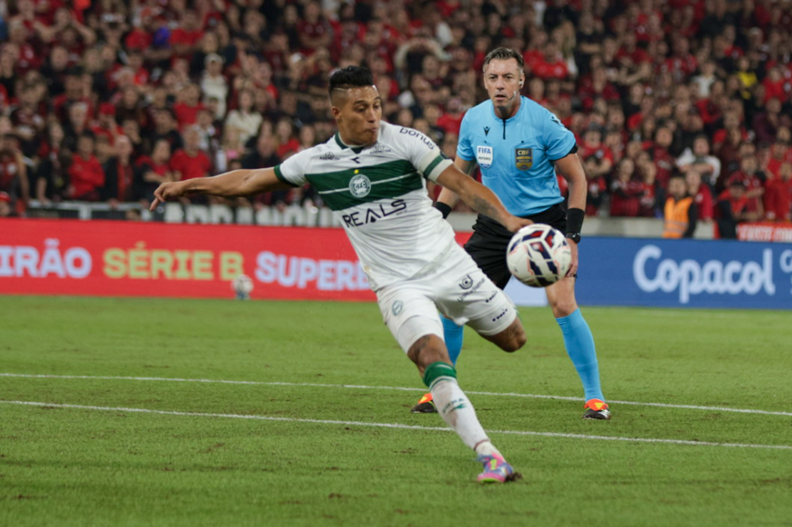
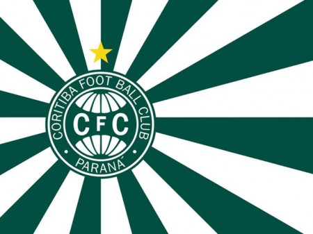

O Coritiba Foot Ball Club, fundado em 12 de outubro de 1909, é o clube mais antigo do estado do ,
Paraná e um dos mais tradicionais do futebol brasileiro.
Mandando seus jogos no histórico Estádio Major Antônio Couto Pereira, o clube busca afirmação no Campeonato Brasileiro sob o comando do técnico Fernando Seabra ,Temporada e Notícias Recentes clube enfrenta desafios no Brasileirão, destacando-se negativamente pelo alto número de cartões vermelhos recebidos nos primeiros tempos das partidas. Após reveses recentes contra equipes como o Internacional e o Flamengo, o Coxa tem trabalhado em ajustes táticos e disciplinares durante a pausa para a Copa do Mundo.
O Coritiba disputa a elite do futebol nacional na atual temporada. Comandado pelo técnico Fernando Seabra, o elenco conta com destaques como o atacante Pedro Rocha e o meia Sebastián Gómez.
Últimas ContrataçõesPara o planejamento atual, o clube investiu em nomes experientes e jovens promessas, destacando-se as chegadas do volante William Oliveira, do lateral Tinga e do atacante Pedro Rocha. Você pode acompanhar a movimentação completa do plantel e as atualizações de mercado acessando o Coritiba FC - Plantel detalhado 2026 - Transfermarkt.

A G.R.T.O. Império Alviverde é a principal torcida organizada do Coritiba Foot Ball Club, fundada em 2 de outubro de 1977. Conhecida por organizar grandes festas com sinalizadores e bandeirões no Couto Pereira, sua sede oficial e loja estão localizadas na Rua Ubaldino do Amaral, 50, no bairro Alto da Glória, em Curitiba.
Fundação e Lema: Criada por Luizão Stellfeld e um grupo de amigos, a torcida tem como lema o apoio incondicional e o compromisso em fortalecer o Coritiba, com seus membros arcando com os próprios custos de ingressos e viagens.Apoio e Caravanas: A agremiação organiza caravanas para acompanhar o time em diversos estádios do Brasil e é amplamente considerada uma das maiores torcidas organizadas da Região Sul.Produtos Oficiais: A torcida possui uma linha própria de vestuário e acessórios que podem ser adquiridos presencialmente ou encomendados via Loja Império Alviverde, com entregas para todo o Brasil. Histórico: Ficou marcada na história do clube por promover shows pirotécnicos em momentos decisivos, como o retorno à primeira divisão em 1995 e em diversos Atletibas.
à 1991
Foi quando um grupo de amigos teve a ideia de fazer duas bandeiras e assistir ao jogo. Durante algum tempo estes amigos iam aos jogos apenas para levar suas bandeiras, foi quando o pessoal da Camisa Zero, uma das torcidas do clube na época, chamou os garotos para irem aos jogos com eles.
Informações do Estádio estádio Major Antônio Couto Pereira passou por reformas estruturais e melhorias nas áreas de convivência e cozinhas. Com essas adaptações recentes, a praça esportiva teve sua capacidade expandida de aproximadamente 38 mil para 40 mil torcedores.Para acompanhar os resultados diários, escalações e estatísticas completas, acesse a cobertura do clube no portal.
O Coritiba Foot Ball Club tem como foco a disputa da temporada sob o comando do técnico Fernando Seabra. O clube reformou o estádio, e conta com peças como o volante Sebastián Gómez, que recentemente alcançou a marca de 123 jogos.
,O elenco do Coritiba, sob comando do técnico Fernando Seabra, conta com peças de destaque e reforços recentes como o atacante Pedro Rocha (artilheiro da Série B de 2025), o atacante Breno Lopes (reforço mais caro do clube) e o uruguaio Lavega, além de buscar ativamente novas contratações no mercado.O plantel alviverde para a temporada é estruturado da seguinte forma: GoleirosPedro MoriscoKeiller (emprestado pelo Internacional)Gabriel LeiteBenassi DefensoresMaicon (Zagueiro)Moledo (Zagueiro)Tiago Cóser (Zagueiro)Tinga (Lateral)Matías Fracchia (Lateral Meio-campistasSebastián GómezWilliam OliveiraFernando SobralFilipe MachadoWalisson AtacantesBreno LopesPedro RochaLavegaGustavo CoutinhoLucas Ronier(Nota: O clube possui oito atletas com contratos que se encerram e que estão liberados para assinar pré-vínculo com outras equipes desde o mês de junho.)
O elenco principal do Coritiba conta com as seguintes opções para a temporada: Goleiros: Pedro Morisco, Gabriel Leite, Pedro Rangel, Benassi e Keiller. Defensores: Maicon, Rodrigo Moledo, Thiago Santos, Tinga e Tiago Cóser. Meio-campistas: Sebastián Gómez, Fernando Sobral, Willian Oliveira, Walisson, Josué, Carlos de Pena, Gustavo e Joaquin Lavega. Atacantes: Lucas Ronier, Pedro Rocha, Breno Lopes, Fabinho, Keno e Rodrigo Rodrigues.
O Coritiba teve diversos jogadores famosos e históricos que marcaram época no clube, desde ídolos consagrados até revelações de destaque. Maiores Ídolos e Históricos: Alex: Considerado um dos maiores camisas 10 da história, ídolo também na Seleção Brasileira e no Palmeiras. Ele retornou ao clube em 2013 para encerrar sua carreira. Keirrison: Revelado na base coxa-branca, foi artilheiro do Campeonato Brasileiro de 2008 e ídolo do clube. Rafinha: Meia-atacante com longa passagem e mais de 250 jogos, sendo muito querido pela torcida. Jairo: Goleiro histórico, é o jogador com mais partidas disputadas vestindo a camisa alviverde. Destaques e Contratações Recentes: Breno Lopes: Atacante contratado recentemente pelo clube por um valor recorde, tornando-se uma das contratações mais caras do Coritiba. Lucas Ronier: Revelado na base, é considerado uma das grandes promessas recentes do Alto da Glória, sendo um dos artilheiros da equipe. Dellatorre: Atacante que se destacou como artilheiro recente do Coxa nas últimas temporadas. Duílio, Neno e Ivo lideram o ranking com mais de 100 gols, que tem ainda nomes mais recentes, como Keirrison e Alex. O grande artilheiro da temporada foi Dellatorre que balançou as redes 10 vezes, sendo seis gols no Paranaense. Coritiba: os maiores ídolos da história do Coxa. Por Rafaela Rasera 18/11/2024 21:43 · Dirceu Krüger. Com uma vida dedicada ao Coritiba Top 10 jogadores que mais atuaram na história do Coritiba: Lendas do Coxa, Jairo e Krüger enaltecem marca histórica a ser alcançado. Contratação mais cara da história do Coritiba, o atacante Breno Lopes foi confirmado nesta quarta-feira com reforço do clube.